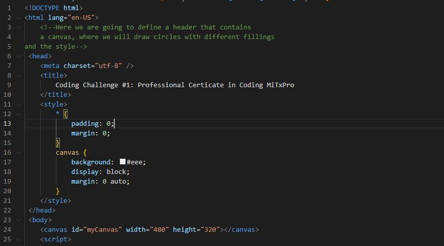
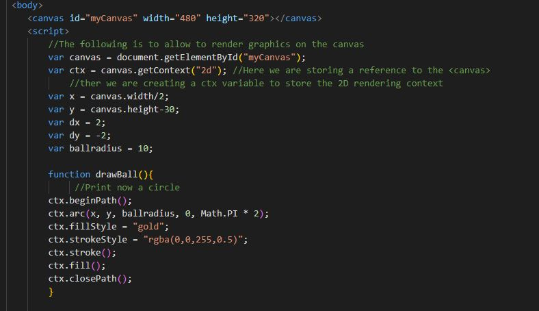
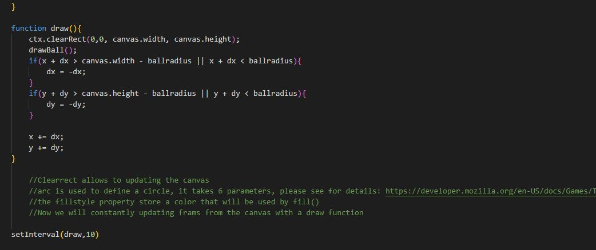

How to code the above bouncing ball using Javascript?
The following small tutorial does not intend to be comprehensive, since there are resources /n
dedicated to that like
mdn havascript documentation . /n
Here we are just merely pay attention on the global overview
1. Generate a canvas
2. Make a function draw circle that contains information of the filling
3. Make a function draw that will update your frames inside the canvas of your cirlces
4. Set som conditionals for the bouncing effects
Now I showed some imgages of the actual code:


